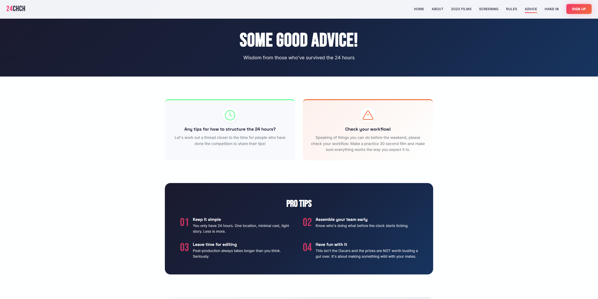

Event Website
24CHCHShort Film Competition
An annual local filmmakers event in Christchurch. Dramatic flair meets digestible design.
Lights, camera, website
24CHCH is an annual local filmmakers event hosted in Christchurch. The goal was to create an effective but straightforward experience — a bit of dramatic flair, but ultimately a digestible and easy-to-follow site.
The site includes a countdown timer, galleries for previous competition entries, and is hooked up to forms and Mailchimp newsletter widgets to keep the community in the loop year-round.

Countdown
Live countdown to competition day builds anticipation and urgency.
Past Entries
Gallery showcasing previous years' films — celebrating the community.
Newsletter
Mailchimp integration keeps filmmakers informed year-round.
Check it out
See the site live and get excited for the next 24CHCH.
Visit 24chch.nz →